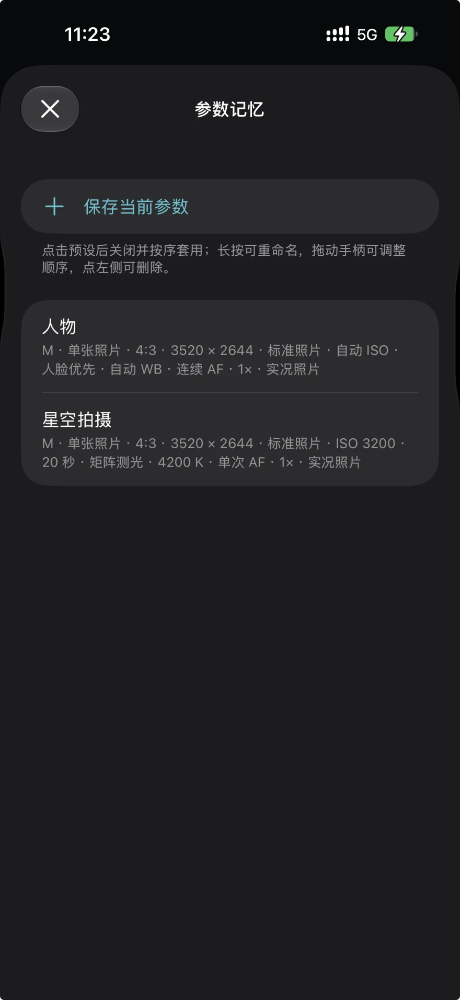

LunaScope
Luna 相机，掌中操控。Your Luna camera, in hand.
用 iPhone 或 iPad 为 Insta360 Luna Ultra 和 Luna Pro 实时取景、调整曝光、操控云台，也能拍照、录像和设置间隔连续拍摄。 Control your Insta360 Luna Ultra or Luna Pro from your iPhone or iPad. Frame a shot live, adjust exposure, move the gimbal, and shoot photos, video, or a series at a set interval.
从取景到锁屏From live preview to the Lock Screen

拍摄控制台Capture console
在同一屏实时取景、变焦和操控云台，也能恢复上次记忆的云台位置。Preview, zoom and steer the gimbal on one screen. Return to the last saved gimbal position.


参数记忆Capture presets
为人物、星空等场景保存常用参数，下次拍摄时轻点预设即可套用。Save settings for portraits, night skies and other scenes, then tap a preset to apply it.

间隔连续拍摄Interval shooting
从预设中选择拍摄间隔，或在 1 秒至 60 分钟之间自定义。Choose a preset interval or set your own, from 1 second to 60 minutes.

实时活动Live Activities
在锁屏和支持的 iPhone 灵动岛上查看连接、录像和连续拍摄状态。Glance at connection, recording and interval shooting status on the Lock Screen or in the Dynamic Island on supported iPhones.
下载 LunaScopeGet LunaScope
适用于 iPhone 和 iPad · 支持 Luna Ultra 和 Luna ProFor iPhone and iPad · Supports Luna Ultra and Luna Pro